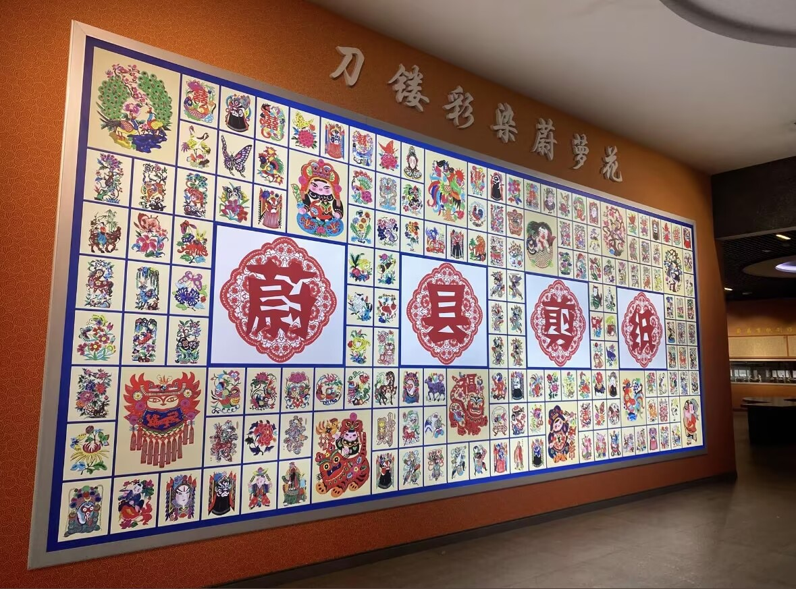
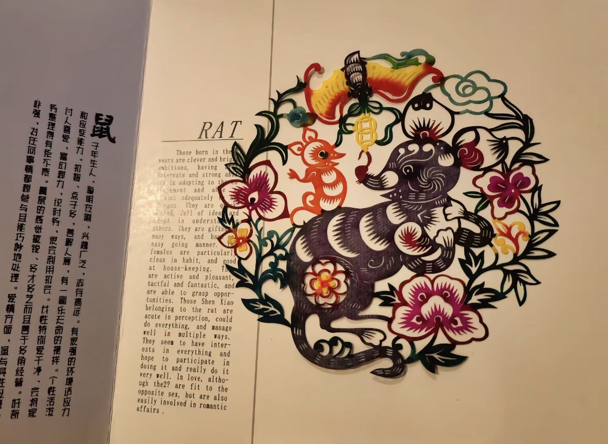
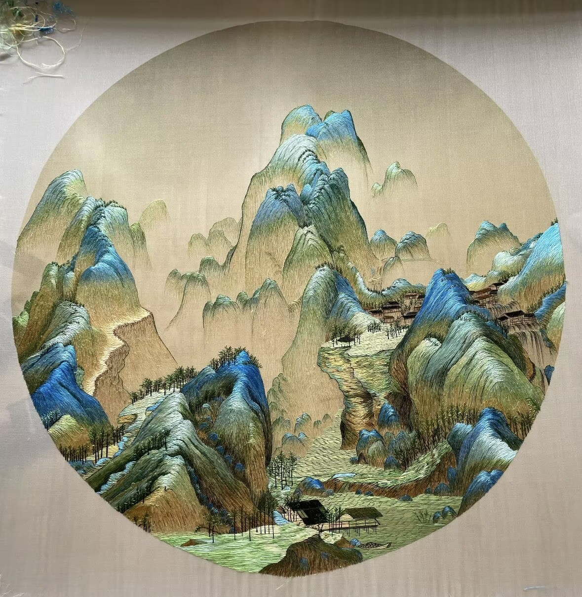
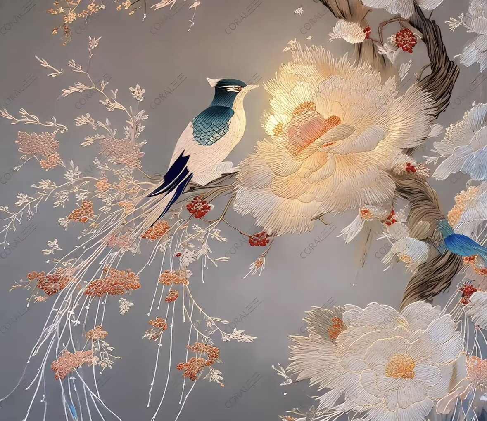
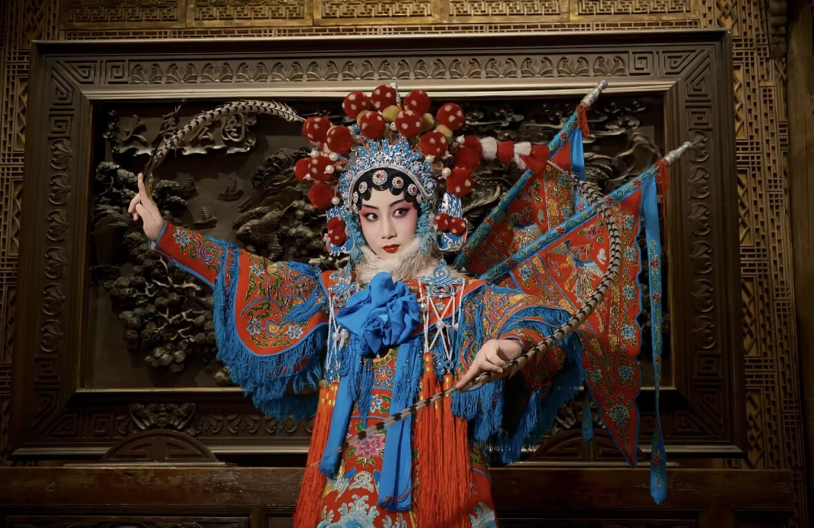
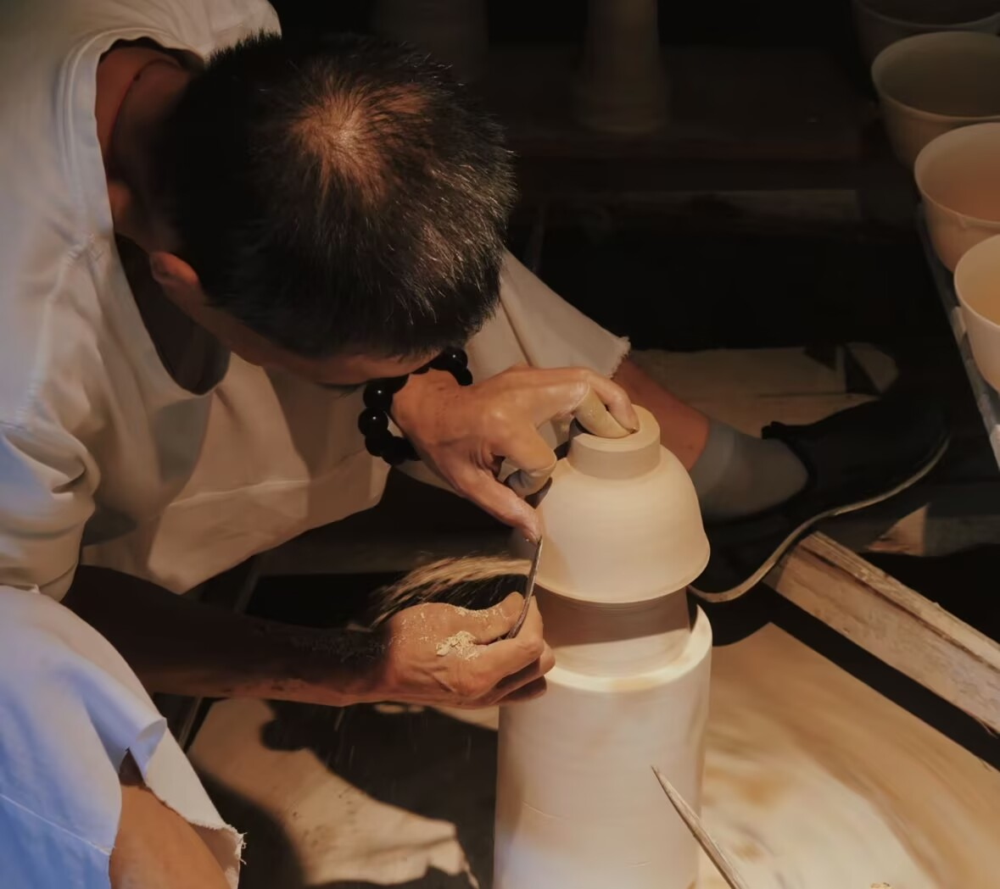
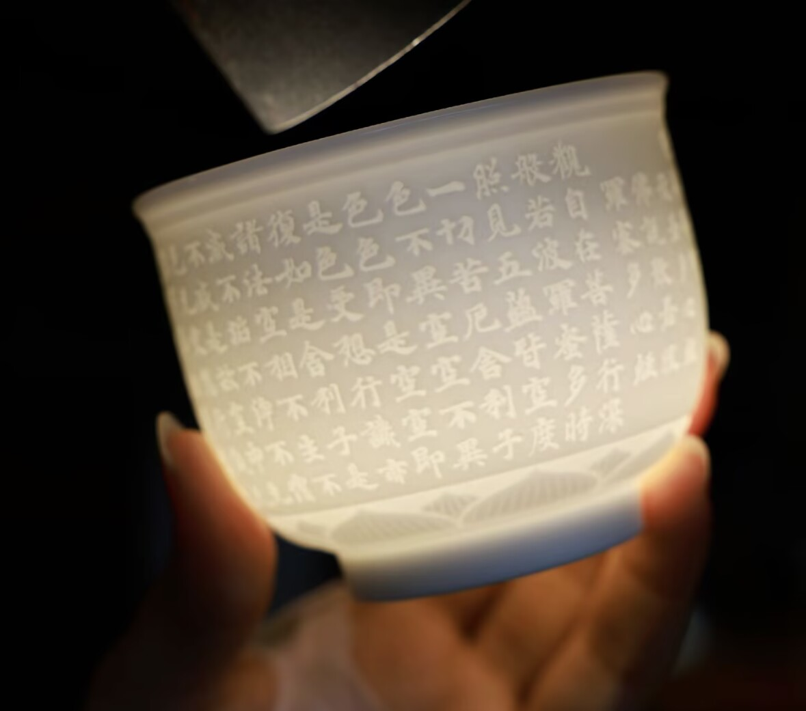

属地：河北张家口蔚县｜国家级非物质文化遗产
技艺简介：区别南方剪刀剪纸，采用刻刀分层刻制、套色点染，最初为过年窗花使用，距今600余年历史。工序分绘稿→刻制→染色三道核心步骤。
传承现状：当地建设非遗工坊，中小学开设剪纸兴趣课堂，依托文旅发展窗花文创。


属地：江苏苏州｜四大名绣之首
技艺简介：起源三国，兴盛明清，拥有平针、打籽针、虚实针40余种针法，作品细腻逼真，素有“针画”美誉，多用于屏风、服饰、摆件。
传承现状：苏州设立苏绣研究所，非遗传承人收徒授课，国潮服饰融入苏绣纹样。


属地：北京，国粹非遗
技艺简介：融合昆曲、汉调演变而来，唱念做打四项基本功，分生旦净丑四大行当，脸谱是标志性视觉符号。
传承现状：各地京剧院团常态化演出，校园戏曲课堂普及。

属地：江西景德镇，千年瓷都
技艺简介：全套72道古法工序，从采石制泥到入窑烧制，青花瓷、粉彩为代表品类，享誉全球。
传承现状：古窑民俗博览区对外开放，年轻匠人返乡创业做文创瓷器。


二十四节气、中医针灸、龙泉青瓷、畲族银器、塔尔寺酥油花，多种趣味互动形式，可通过竞答、3D 粒子景观、拼图游戏沉浸式学习非遗小知识。